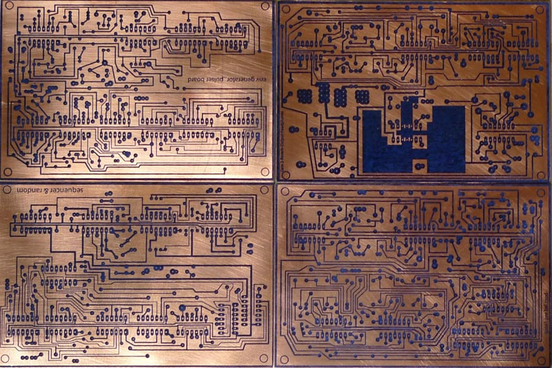
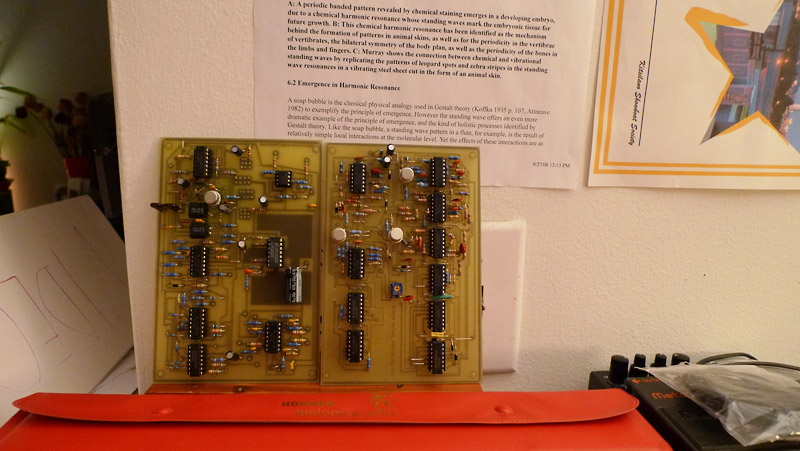
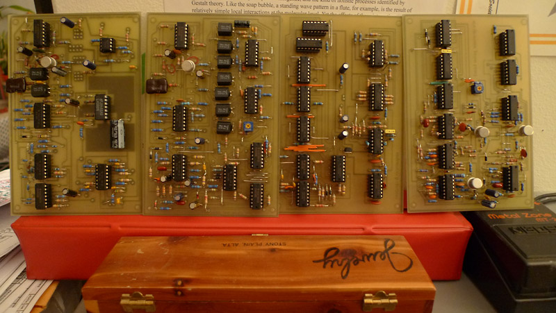
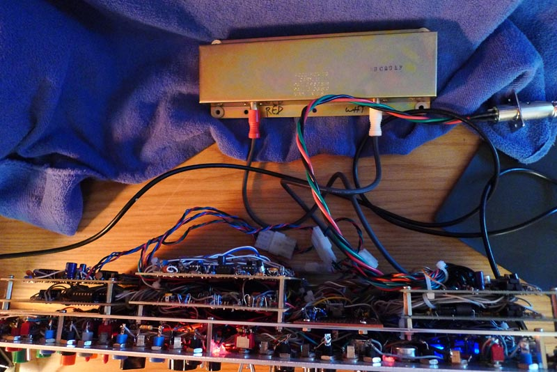
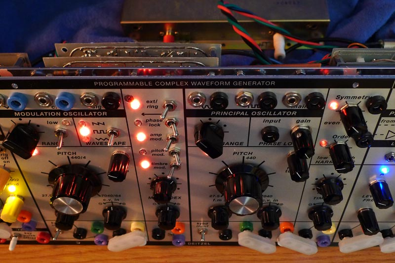
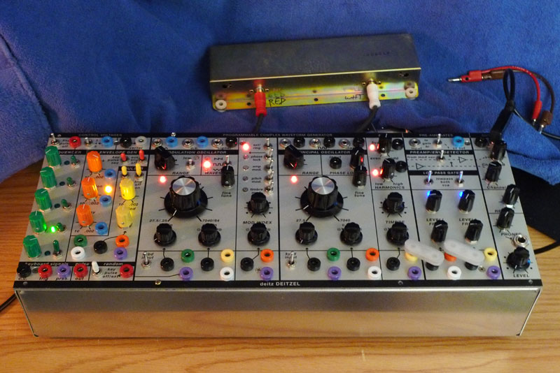
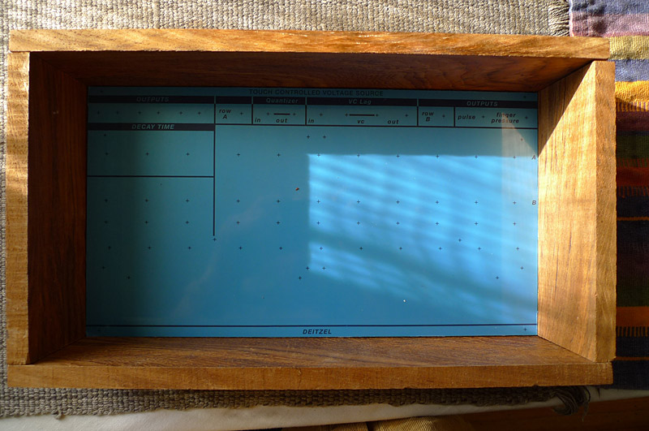

David Leith :: Work :: Easel Clone Modular Synth

The Modular Workshop: building the easel synthesizer clone.
Inspiration
This project is a personal project. As much as I’d like to release these pcb layouts designs for SDIY there are several issues; Firstly there are many errors as this is a first time (and only time) build, layouts were done in a drawing program, not a circuit board layout program. Nothing has been updated or corrected except by cutting/moving traces and connections based on re-reading the schematics. No documentation by me for this exists. Secondly I don’t have Don Buchla’s permission to release these versions (flawed or not). Lastly, it’s built, sounds great and I want to spend time playing music not updating hand written notes and documentation and layouts.
The design is based on the Buchla Music Easel which is pictured in the history section of the Buchla website. The original blueprints can be found here.
I’ve used a different oscillator design, the Buchla 259. Features have been added (octave switching) and others removed (autotune & remote). The building of this design is another story. This link also has bare sound samples of the 259 oscillator showing timbre, amplitude and pitch modulation as well as phase lock
The Easel balanced modulator shows up as the top switch in the oscillator modulation switch. The switch selects:- pre-amp only,
- balanced modulator with complex and modulation as sources,
- pre-amp with balanced modulator/mod osc.
My panel also uses only rotary pots instead of a combination of sliders and pots. This panel has a few additional patch points that on the original were only accessible through the preset cards. I needed to do this as I had decided not to include the card based preset system.
The original Easel would come with a touch sensitive keyboard. I’m going to use my Serge TKB to do this for now.
Sample sound created when doing final testing are at the bottom of this page.
Panel Design Using Illustrator


Making the Four Additional Circuit Boards (the 259 has 2 more)
The blueprints are hand drawn into Adobe Illustrator, then printed with black and white laser toner, then etched and drilled.


 The first 2 boards are stuffed with parts.
 All the boards now ready for a total of 6 boards.
 Working on the enclosure. The final ended up slightly different.
 Wiring up the 259 and testing - it does sound pretty awesome, extra side board covers a few missed LED drivers and a buchla gate convertor (combined gate/pulse) and a small 5 volt supply.
Wiring up the 259 and testing - it does sound pretty awesome, extra side board covers a few missed LED drivers and a buchla gate convertor (combined gate/pulse) and a small 5 volt supply.
 Some panel wiring.
Some panel wiring.
 All boards wired to panel with reverb tank.
All boards wired to panel with reverb tank.


 Done. In the box! Just waiting for suitable case for this panel and possibly a touch keyboard.
Done. In the box! Just waiting for suitable case for this panel and possibly a touch keyboard.
 Sample sounds created when doing final testing:
Adding a Touch controlled keyboard
The design is based on the Buchla 216 with a quantizer from Mucic from Outer Space and a a voltage controlled lag processor from the Buchla 208 keyboard.




2012